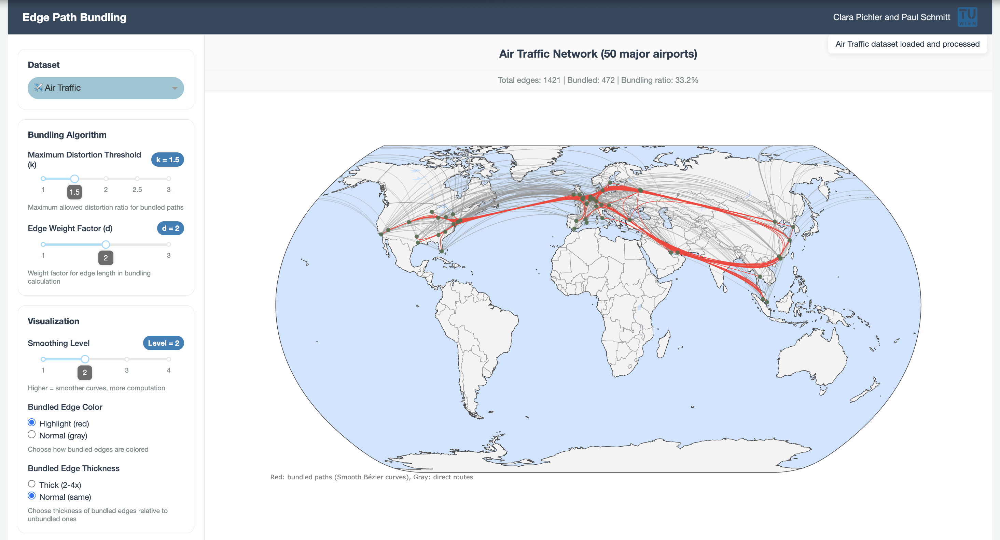

Project Overview
Graph visualizations often suffer from edge clutter: when many edges are drawn between nodes, the result quickly becomes visually overwhelming. Overlapping edges, crossings, and dense regions make it difficult to understand the underlying structure of the graph.
A common solution to this problem is edge bundling. Instead of drawing each edge independently, similar edges are grouped together into bundles, reducing clutter and improving readability. However, many traditional edge bundling techniques introduce new problems.
Force-directed, geometry-based, and confluent bundling methods often distort edges in a way that makes it unclear where individual connections start and end. This can lead to ambiguous crossings and misleading visual interpretations.
The paper “Edge-Path Bundling: A Less Ambiguous Edge Bundling Approach” by Wallinger et al. (2021) proposes a different idea. Instead of arbitrarily deforming edges, each edge is routed along a weighted shortest path in an overlay graph. This keeps deviations small, preserves interpretability, and still achieves effective bundling.
Our Contribution
In this project, we reimplemented the Edge-Path Bundling (EPB) algorithm in Python. We also used the same (similar) two-dimensional datasets as the original paper to validate our implementation. We then extended EPB to work with higher-dimensional data. In particular, we introduce a three-dimensional brain connectivity dataset derived from human connectomes. The original algorithm did not introduces big problems since the it does not refer to coordinates but only to graph nodes. Therefore, we had one algorithm for two and three dimensional datasets. However, different kind of visual clutter was created. Visualising all three datasets had some challenges.
Depending on the dataset, we adapted the distance metric used by the algorithm. For geospatial datasets, we rely on the haversine distance to account for the Earth’s curvature, while Euclidean distance is used for the three-dimensional brain data.
Finally, we developed an interactive Dash application that allows users to explore EPB
visually. Users can select datasets and adjust key parameters such as the maximum distortion
threshold k and the edge weight factor d in real time, making it easy
to study the effect of different settings. Furthermore, we added a Bezier curve smoothing parameter which allows
the user to control the bundling strength in the final drawing by inserting additional control
points along the path.
Datasets
Air Traffic
The Air Traffic dataset contains global flight routes between airports. It consists of 1,533 airports and 14,825 directed connections, forming one connected component. The data is provided by the OpenFlights project and is visualized using the haversine distance.
Migration Flows
The Migration dataset represents migration outflows between U.S. counties. While the exact version used in the original paper is no longer available, a comparable dataset from the U.S. Census Bureau is used instead. Distances are again computed using the haversine formula.
Brain Connectivity
The brain connectivity dataset is based on MRI-derived connectomes from the Human Connectome Project. Each node represents a brain region and edges correspond to structural connections. We focus on a single Scale 2 connectome (approximately 80–100 regions) and use Euclidean distance for all computations.
How to Run
All required libraries are listed in the requirements.txt file.
You can install them using:
pip install -r requirements.txtTo start the Dash application, run either
python run_dashboard.pyor
python src/dashboard/app.py
Then open http://0.0.0.0:8050/ in your browser.
User Manual
The screenshot below shows our Dash application. On the left side one can find the parameter control. It is divided into three sections.

The user can choose one of the three network datasets, as described in Section Datasets. The maximun distortion parameter k can be changed to a real number between and including 1 and 3. In the original paper Wallinger et. al. writes that a maximum distortion factor between 1.5 and 3 works well for most of their experiments whereas a distortion factor of less than 1.5 resulted in very little edge bundling. That is why we settled on this range. Also an edge weight factor d can be changed to the users liking, ranging again from 1 till 3. We only chose those values since higher values penalise long edges from being included in shortest paths used for bundling. Note that d is an integer.
Once the control points (edges that are not bundeled) are computed they are used to draw the network graph (seen on the right) each edge using a smooth Bezier curve. A smoothing parameter which controls the bundling strength in the final drawing can also be controlled by the user. This integer is 2 for the experiments of the original paper, but in our application the user can play around with the parameter. Also the user can choose to highlight the bundled edges and even make them thicker for a more defined visualization of the algorithm.
At the top of the page one can see the header as well as some statistics that tell you how many edges the network has in total, how many has been bundled through the EPB algorithm and the ratio.
Discussion & Future Work
The project demonstrates that Edge-Path Bundling can be applied to both 2D and 3D datasets in an interactive setting. While the system is functional and flexible, rendering time can become an issue for larger graphs.
In the worst case, EPB has a time complexity of
O(|E|² log |V|), as Dijkstra’s algorithm may be executed for each edge.
In practice, the distortion threshold k significantly reduces runtime
by terminating path searches early. We did improve performance by introducing caching system for
datasets and bundling results as well as limiting the nodes of each of the datasets. However, we belive
performance can still be greatly improved.
Future work could focus on performance optimizations, through GPU-based rendering or pre computing some commonly used statistics. For example pre-computing common Bèzier curve configurations to minimize real-time computational overhead.
Another interesting addition to this project is benchmarking EPB against other edge bundling techniques to better understand its strengths and limitations. Although EPB introduces way less ambiguities than other bundeling algorithms, they are still struggeling with some. In their paper they are discussing Path Endpoint Ambiguit and Edge Crossing Ambiguity which are still an open problem and would be interesting to explore.
References
- Wallinger, M., Mühler, T., & Gröller, E. (2021). Edge-Path Bundling: A Less Ambiguous Edge Bundling Approach. arXiv:2108.05467
- OpenFlights Project. https://openflights.org/data.php
- BrainGraph – PIT Group Connectomes. https://braingraph.org/download-pit-group-connectomes/
- U.S. Census Bureau. County-to-County Migration Flows. Census Migration Data